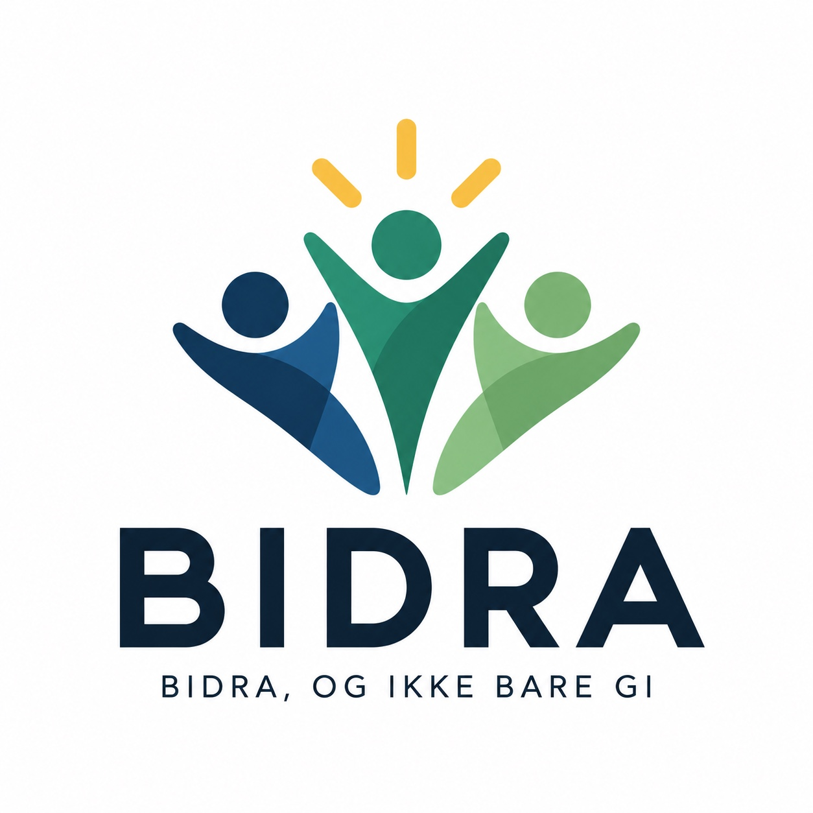

Én kampanje. 30 dager. Vi prøver konkrete handlinger i tillegg til donasjoner og sammenligner med dagens givermodell. Organisasjonen beholder betalingsløsningen og giverbasen.

Vi velger én reell kampanje og ett konkret behov. Før oppstart låser vi sammen mål, eksisterende baseline, aksepterte handlinger, verifiseringsmetode og stoppregler. Ingen ny betalingsflyt kreves.
Registrer donasjoner, givere, relevante handlinger og kampanjekostnad i en sammenlignbar periode. Avtal hvordan forskjeller i målgruppe og tidspunkt håndteres.
Tilby opptil fem handlinger knyttet til et publisert behov, for eksempel frivillig arbeid, transport eller relevant faglig hjelp. Det skal fortsatt være enkelt å gi penger alene.
Etter 30 dager rapporterer vi inviterte, bekreftede handlinger, donasjoner, kostnader, frafall og usikkerhet. Resultatet kan være negativt.
Hypotesen er at konkrete handlinger øker antall bekreftede relevante bidrag per 100 inviterte uten at donasjonsrate eller innsamlet beløp per 100 inviterte faller mot avtalt sammenligningsgrunnlag. Terskler, datakilder og sammenligningsmetode fastsettes skriftlig før piloten.
Organisasjonen definerer behovet og utpeker den som godkjenner en utført handling. En kvittering viser oppgave, dato, evidens og kontrollør. Resultat for mottakerne måles separat etter avtalt metode. Vi tilskriver ikke effekten av en kampanje til én giver uten grunnlag.
Ingen pilotpartner eller målt resultat er publisert ennå.
Personer, grensesnitt og leveringsbekreftelse i filmen viser ikke en faktisk kampanje eller dokumentert effekt.
Piloten bruker bare data som trengs for den avtalte kampanjen. Roller, behandlingsgrunnlag, oppbevaring og tilgang avtales med organisasjonen før oppstart. Ingen portabel profil eller rangering av personer og organisasjoner inngår. En profil på tvers av organisasjoner krever særskilt personvernvurdering, inkludert vurdering av DPIA, før utvikling.